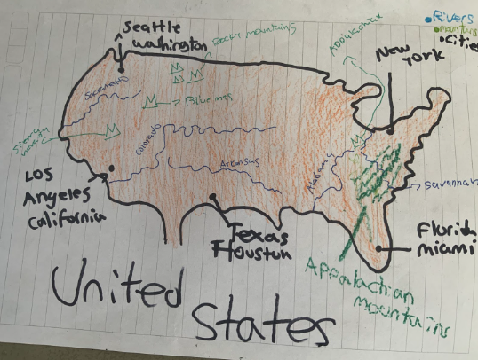
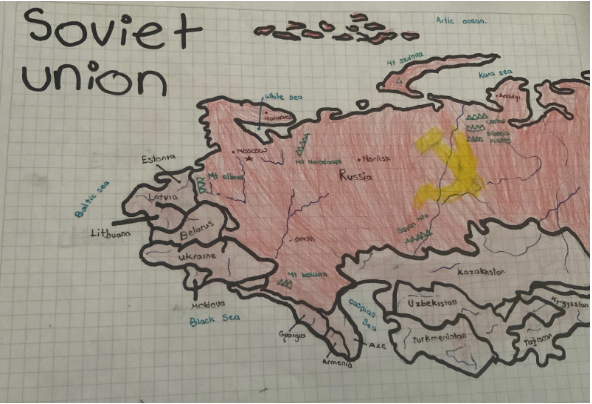
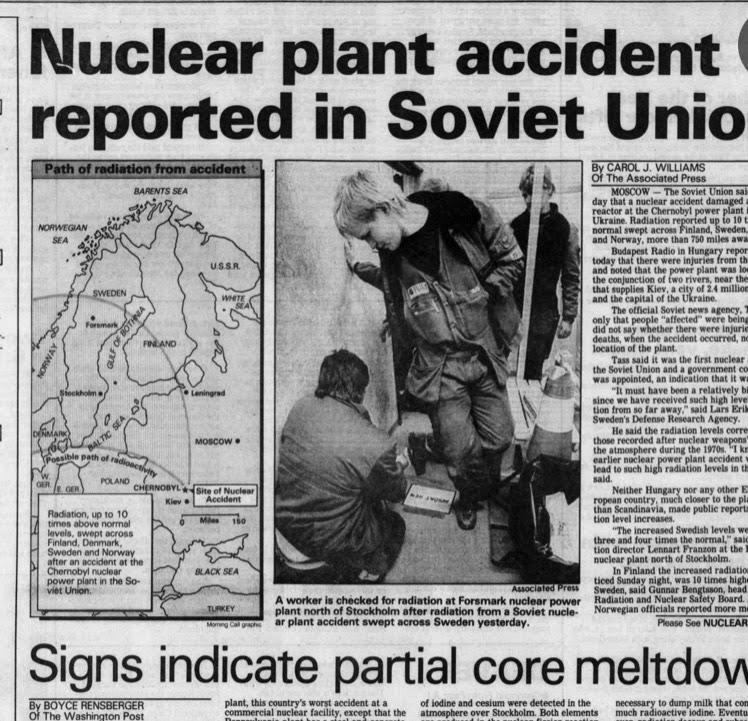
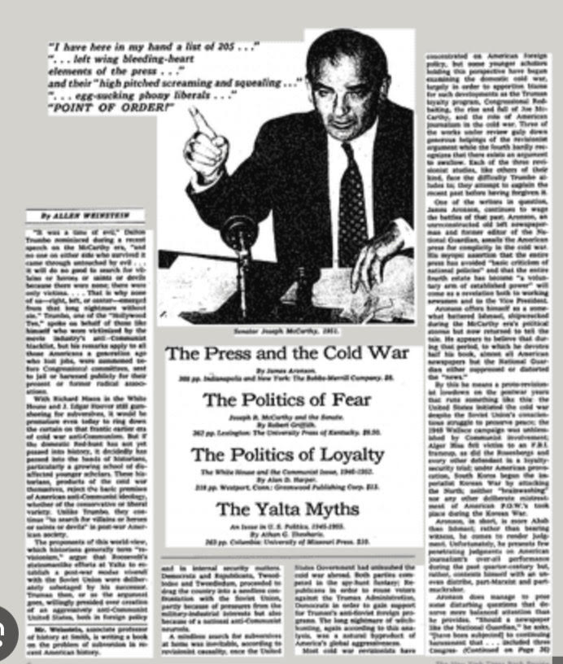

<>
Maps
Ethnicity:
- Soviet Union: Ukrainians, Bashkirs, Russians. Kalmyks, Armenians, Crimean, Tatars, Georgians, Karelians, Mari people, Ingush people, Karakalpaks, Abkhazians, Tajiks, Kyrgyz people, Chechens, Uzbeks
- United States: Its major groups were Caucasian, African American, Hispanic, and Asian communities.
Languages:
- Soviet Union: East Slavic languages (Russian, Belarusian and Ukrainian) dominated in the European part of the Soviet Union, the Baltic languages Lithuanian and Latvian, and the Finnic language Estonian were used next to Russian in the Baltic region, while Moldovan (the only Romance language in the union) was used in the southwest.
- United States: English was the predominant language in the United States during the Cold War. However, the country's linguistic landscape became more diverse over time due to immigration from different regions.
Religion:
- Soviet Union: Orthodox Christians constituted a majority of believers in the Soviet Union.
- It was predominantly Christian but it also had other religions like Judaism and some Eastern religions.
Mapas


Speaches

